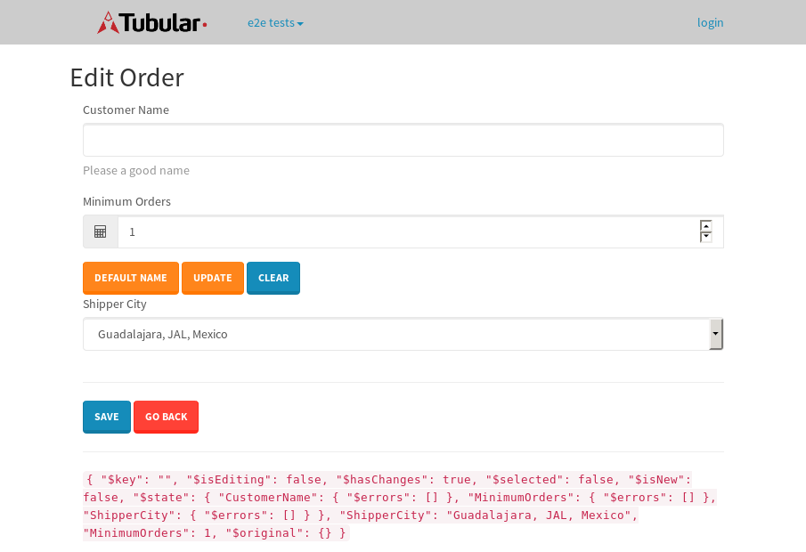
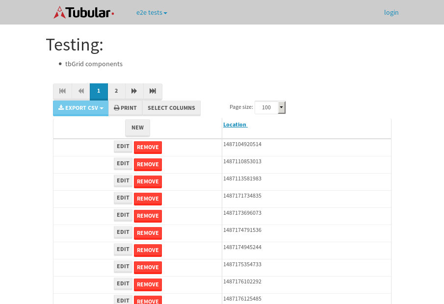
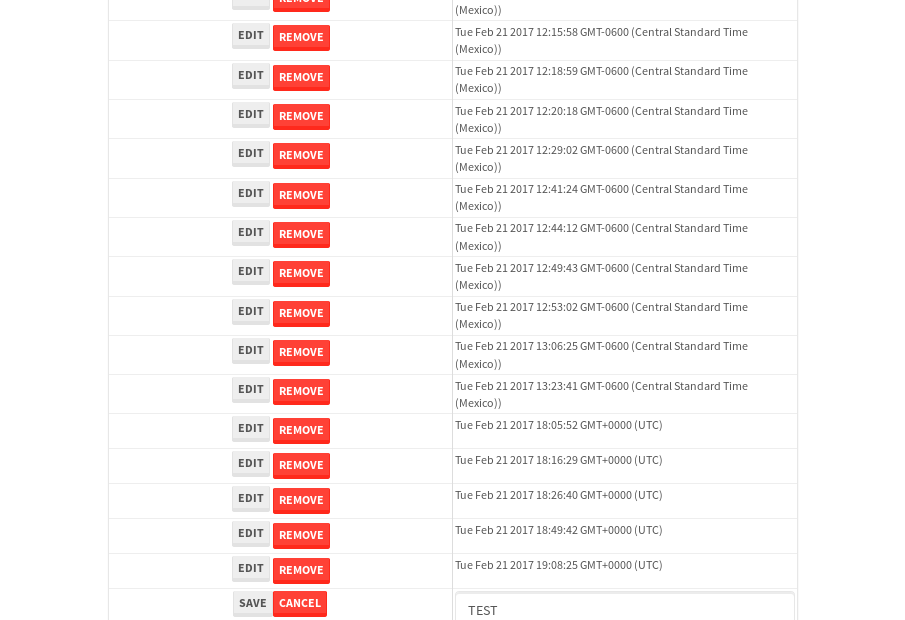

tbColumn.Grid Sorting - 30.224sTests: 5Skipped: 0Failures: 0 should sort data in ascending order then on descending order when sorting by Order Id column - 7.065sTests passed: 100.00%should order data in ascending order when click-sorting an unsorted text column - 5.384sTests passed: 100.00%should order data in descending order when click-sorting an ascending-sorted text column - 5.961sTests passed: 100.00%should order data in ascending order when click-sorting an unsorted date column - 5.901sTests passed: 100.00%should order data in descending order when click-sorting twice an unsorted date column - 5.912sTests passed: 100.00%
tbEmptyForm - 4.246sTests: 3Skipped: 0Failures: 1 should have an empty required field - 1.142sTests passed: 100.00%should not be able to click on save - 0.677sExpected null not to be null null.✗Tests passed: 50.00%should load default value for numeric field - 0.683sTests passed: 100.00%
Tubular Filters.tbColumnFilter - 114.389sTests: 12Skipped: 0Failures: 0 should cancel filtering when clicking outside filter-popover - 10.126sTests passed: 100.00%should disable Value text-input for "None" filter - 7.33sTests passed: 100.00%should disable apply button for "None" filter - 6.918sTests passed: 100.00%should decorate popover button when showing data is being filtered for its column - 12.518sTests passed: 100.00%should correctly filter data for the "Equals" filtering option - 9.002sTests passed: 100.00%should correctly filter data for the "Not Equals" filtering option - 9.285sTests passed: 100.00%should correctly filter data for the "Contains" filtering option - 9.043sTests passed: 100.00%should correctly filter data for the "Not Contains" filtering option - 9.342sTests passed: 100.00%should correctly filter data for the "Starts With" filtering option - 7.635sTests passed: 100.00%should correctly filter data for the "Not Starts With" filtering option - 7.215sTests passed: 100.00%should correctly filter data for the "Ends With" filtering option - 7.04sTests passed: 100.00%should correctly filter data for the "Not Ends With" filtering option - 7.674sTests passed: 100.00%
Tubular Filters.tbColumnDateTimeFilter - 142.514sTests: 12Skipped: 0Failures: 0 should cancel filtering when clicking outside filter-popover - 8.437sTests passed: 100.00%should disable Value text-input for "None" filter - 6.977sTests passed: 100.00%should disable apply button for "None" filter - 7.023sTests passed: 100.00%should clear filtering when clicking on Clean button - 18.778sTests passed: 100.00%should decorate popover button when showing data is being filtered for its column - 12.291sTests passed: 100.00%should correctly filter data for the "Equals" filtering option - 7.751sTests passed: 100.00%should correctly filter data for the "Not Equals" filtering option - 7.924sTests passed: 100.00%should correctly filter data for the "Between" filtering option - 12.317sTests passed: 100.00%should correctly filter data for the "Greater-or-equal" filtering option - 12.601sTests passed: 100.00%should corretlly filter data for the "Greater" filtering option - 13.587sTests passed: 100.00%should correctly filter data for the "Less-or-equal" filtering option - 12.241sTests passed: 100.00%should correctly filter data for the "Less" filtering option - 11.776sTests passed: 100.00%
Tubular Filters.tbColumnOptionsFilter - 85.688sTests: 3Skipped: 0Failures: 0 should cancel filtering when clicking outside filter-popover - 11.115sTests passed: 100.00%should decorate popover button when showing data is being filtered for its column - 12.395sTests passed: 100.00%should filter column-elements in accordance to the selected filter when selecting a single option - 50.98sTests passed: 100.00%
Tubular Filters.tbTextSearch - 50sTests: 5Skipped: 0Failures: 0 min-chars is not set - 1.359sTests passed: 100.00%should filter data in searchable-column customer name to matching inputted text, starting from 3 characters - 7.045sTests passed: 100.00%should filter data in searchable-column shipper city to matching inputted text, starting from 3 characters - 12.417sTests passed: 100.00%should show clear button when there is inputted text only - 6.613sTests passed: 100.00%should clear filtering when clicking clear button - 16.929sTests passed: 100.00%
tbForm related components.tbCheckboxField - 7.606sTests: 2Skipped: 0Failures: 0 should save changes on "SAVE" - 3.92sTests passed: 100.00%should discard changes on "CANCEL" - 2.291sTests passed: 100.00%
tbForm related components.tbDropDownEditor - 13.385sTests: 5Skipped: 0Failures: 0 should set initial input value to the value of "value" attribute when defined - 2.373sTests passed: 100.00%should show the component name value in a label field when "showLabel" attribute is true - 2.202sTests passed: 100.00%should show a help field equal to this attribute, is present - 1.964sTests passed: 100.00%should submit modifications to item/server when clicking form "Save" - 3.039sTests passed: 100.00%should NOT submit modifications to item/server when clicking form "Cancel" - 2.888sTests passed: 100.00%
tbForm related components.tbTextArea - 18.304sTests: 7Skipped: 0Failures: 0 should set initial input value to the value of "value" attribute when defined - 2.046sTests passed: 100.00%should be invalidated when the number of chars is not in the range of "min" and "max" attributes - 2.52sTests passed: 100.00%should show the component name value in a label field when "showLabel" attribute is true - 2.45sTests passed: 100.00%should show a help field equal to this attribute, is present - 2.541sTests passed: 100.00%should require the field when the attribute "required" is true - 2.387sTests passed: 100.00%should submit modifications to item/server when clicking form "Save" - 3.243sTests passed: 100.00%should NOT submit modifications to item/server when clicking form "Cancel" - 2.392sTests passed: 100.00%
tbForm related components.tbDateEditor - 15.966sTests: 6Skipped: 0Failures: 0 should set initial date value to the value of "value" attribute when defined - 1.754sTests passed: 100.00%should be invalidated when the date is not in the range of "min" and "max" attributes - 2.102sTests passed: 100.00%should show the component name value in a label field when "showLabel" attribute is true - 2.629sTests passed: 100.00%should show a help field equal to this attribute, is present - 1.819sTests passed: 100.00%should submit modifications to item/server when clicking form "Save" - 3.057sTests passed: 100.00%should NOT submit modifications to item/server when clicking form "Cancel" - 3.844sTests passed: 100.00%
tbForm related components.tbTypeaheadEditor - 19.952sTests: 7Skipped: 0Failures: 0 should show an options list when there is an API-info/component entered-data - 2.25sTests passed: 100.00%should select the option clicked - 2.852sTests passed: 100.00%should show a "delete" button when an option/match is selected, and delete the option if button is clicked - 3.291sTests passed: 100.00%should show a label value equal to the component name when "showLabel" attribue is true - 1.874sTests passed: 100.00%should require a value when "require" attribute is true - 3.076sTests passed: 100.00%should submit modifications to item/server when clicking form "Save" - 3.629sTests passed: 100.00%should NOT submit modifications to item/server when clicking form "Cancel" - 1.963sTests passed: 100.00%
tbForm related components.tbSimpleEditor - 25.76sTests: 9Skipped: 0Failures: 0 should set initial input value to the value of "value" attribute when defined - 1.814sTests passed: 100.00%should be invalidated when the number of chars is not in the range of "min" and "max" attributes - 2.944sTests passed: 100.00%should show the component name value in a label field when "showLabel" attribute is true - 2.73sTests passed: 100.00%should set input placeholder to the value of "placeholder" attribute - 4.174sTests passed: 100.00%should validate the control using the "regex" attribute, if present - 2.199sTests passed: 100.00%should show a help field equal to this attribute, is present - 2.015sTests passed: 100.00%should require the field when the attribute "required" is true - 1.87sTests passed: 100.00%should submit modifications to item/server when clicking form "Save" - 3.401sTests passed: 100.00%should NOT submit modifications to item/server when clicking form "Cancel" - 3.785sTests passed: 100.00%
tbForm related components.tbNumericEditor - 18.26sTests: 7Skipped: 0Failures: 0 should set initial component value to the value of "value" attribute when defined - 1.723sTests passed: 100.00%should be invalidated when the entered number is not in the range of "min" and "max" attributes - 2.172sTests passed: 100.00%should show the component name value in a label field when "showLabel" attribute is true - 1.814sTests passed: 100.00%should show a help field equal to this attribute, is present - 2.404sTests passed: 100.00%should require the field when the attribute "required" is true - 2.39sTests passed: 100.00%should submit modifications to item/server when clicking form "Save" - 3.489sTests passed: 100.00%should NOT submit modifications to item/server when clicking form "Cancel" - 3.626sTests passed: 100.00%
tbForm Connection Error NoModelKey - 2.701sTests: 1Skipped: 0Failures: 0 tbForm connection error functionality - 0.491sTests passed: 100.00%
tbForm Connection Error NoServerUrl - 2.515sTests: 1Skipped: 0Failures: 0 tbForm connection error functionality - 0.547sTests passed: 100.00%
tbGridComponents - 52.771sTests: 6Skipped: 0Failures: 4 should add item with newRow method - 5.848sExpected 'EDIT REMOVE Tue Feb 21 2017 19:33:36 GMT+0000 (UTC)' not to be 'EDIT REMOVE Tue Feb 21 2017 19:33:36 GMT+0000 (UTC)'.✗Tests passed: 50.00%should add item with newRow method and cancel action - 1.204sTests passed: 100.00%should update item with tbSaveButton - 20.179sExpected '' to be 'TEST'.✗Tests passed: 0.00%should NOT update item on cancel Update action - 0.78sFailed: ElementNotVisibleError✗Tests passed: 0.00%should remove item with tbRemoveButton - 21.09sExpected 100 not to be 100, 'should remove the row from the table'.✗Tests passed: 50.00%should NOT remove item on cancel Remove action - 1.091sTests passed: 100.00%
tbGridPager.navigation buttons - 10.068sTests: 1Skipped: 0Failures: 0 should perform no action when clicking on the numbered navigation button corresponding to the current-showing results page - 1.422sTests passed: 100.00%
tbGridPager.navigation buttons.first/non-last results page related functionallity - 3.9sTests: 2Skipped: 0Failures: 0 should disable "first" and "previous" navigation buttons when in first results page - 1.59sTests passed: 100.00%should enable "last" and "next" navigation buttons when in a results page other than last - 2.309sTests passed: 100.00%
tbGridPager.navigation buttons.last/non-first results page related functionallity - 4.746sTests: 2Skipped: 0Failures: 0 should disable "last" and "next" navigation buttons when in last results page - 2.535sTests passed: 100.00%should enable "first" and "previous" navigation buttons when in a results page other than first - 2.211sTests passed: 100.00%
tbGridPager.page navigation - 9.779sTests: 5Skipped: 0Failures: 0 should go to next results page when clicking on next navigation button - 2.201sTests passed: 100.00%should go to previous results page when clicking on previous navigation button - 3.308sTests passed: 100.00%should go to last results page when clicking on last navigation button - 1.521sTests passed: 100.00%should go to first results page when clicking on first navigation button - 1.343sTests passed: 100.00%should go to corresponding results page when clicking on a numbered navigation button - 1.406sTests passed: 100.00%
tbGridPagerInfo - 7.339sTests: 2Skipped: 0Failures: 0 should show text in accordance to numbered of filter rows and current results-page - 1.372sTests passed: 100.00%should show count in footer - 0.879sTests passed: 100.00%
tbHttp - 19.597sTests: 8Skipped: 1Failures: 1 should be authenticated - 3.103sTests passed: 100.00%retrieve data - 2.551sTests passed: 100.00%should not login bad credentials - 2.381sExpected '' to be 'false'.✗Tests passed: 0.00%should have a refresh token - 4.024sTests passed: 100.00%should remove authentication - 2.3sTests passed: 100.00%get method-Is not authenticated - 2.767sTests passed: 100.00%post method-Is not authenticated - 2.47sTests passed: 100.00%should regenerate access token on post - 0s***Skipped***Tests passed: 0%
tbPageSizeSelctor - 9.762sTests: 4Skipped: 0Failures: 0 should filter up to 10 data rows per page when selecting a page size of "10" - 2.461sTests passed: 100.00%should filter up to 20 data rows per page when selecting a page size of "20" - 1.526sTests passed: 100.00%should filter up to 50 data rows per page when selecting a page size of "50" - 2.283sTests passed: 100.00%should filter up to 100 data rows per page when selecting a page size of "100" - 2.06sTests passed: 100.00%
tbRowSelectable - 13.593sTests: 2Skipped: 0Failures: 0 selected rows - 5.627sTests passed: 100.00%unselected rows - 5.19sTests passed: 100.00%
tbSingleForm - 21.565sTests: 8Skipped: 1Failures: 0 should load correct info - 0s***Skipped***Tests passed: 0%should change customer name - 3.27sTests passed: 100.00%should save it - 3.953sTests passed: 100.00%should clear the inputs - 2.379sTests passed: 100.00%should update - 2.607sTests passed: 100.00%should reset editor - 3.403sTests passed: 100.00%should not save if not Changes - 3.029sTests passed: 100.00%should not be able to click on save - 2.924sTests passed: 100.00%


{kind=link}
{kind=link}
{kind=link}